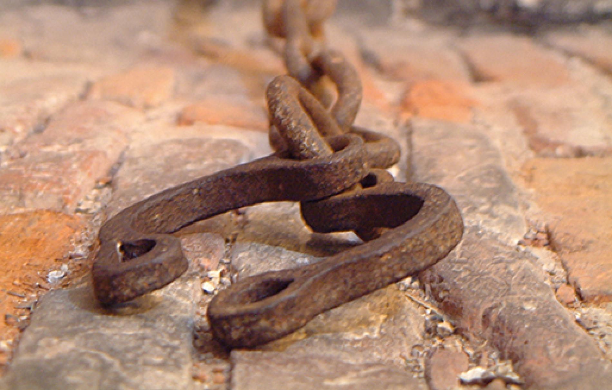
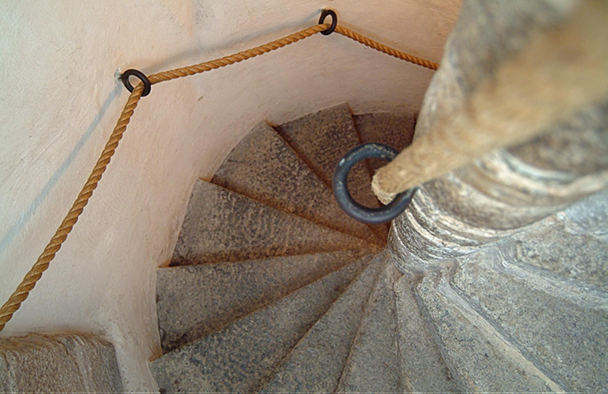

The Tolbooth Museum
The Tolbooth Museum - Rebel Jacobites Imprisioned
The Tolbooth Museum is housed in the former wardhouse, or prison for Aberdeen, a unique complex of 17th and 18th century gaol cells. It first opened to the public as a museum in 1995. The Tolbooth Museum is very popular with locals and tourists alike.

Featured displays deal with local history and the evolution of crime and punishment over the centuries. The museum's unique atmosphere and gaol cells provide a striking visitor experience and a real insight into imprisonment and the treatment of prisoners and rebel Jacobites in times gone by.